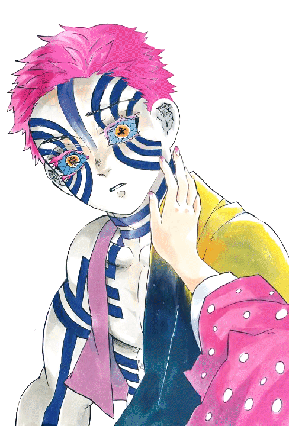
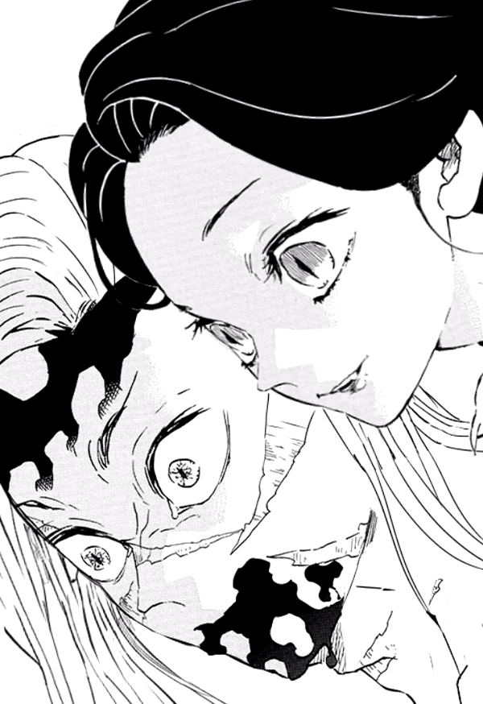
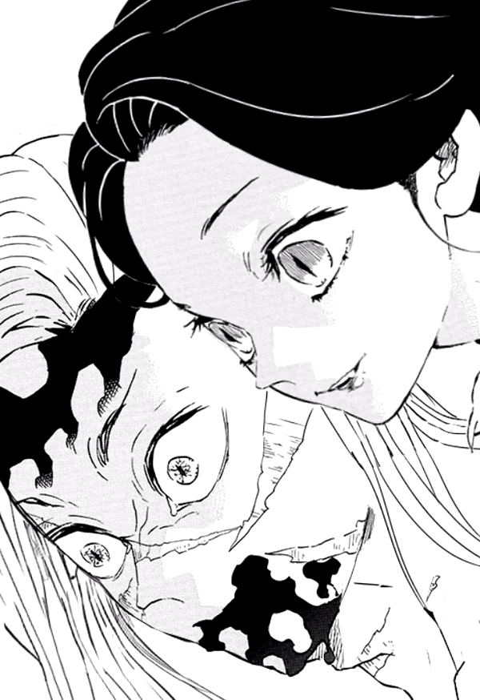
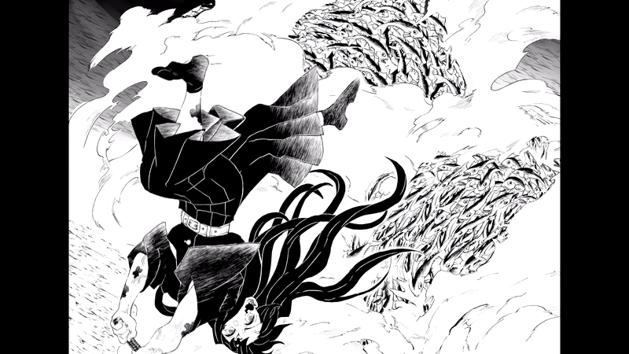
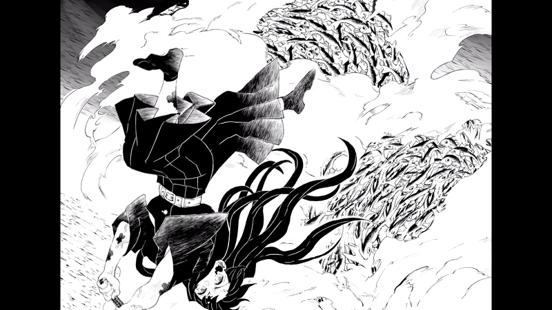

fan gifs
During the pandemic, I spend some time trying out different art media and I fell in love with editing, playing with Adobe After Effects. I am a fan of "kimestu no yaiba"/ demon slayer, I make small practice edits of using the image from the manga. I try to make one editing work a day, slowly adapting AE. I am not an animator but I can use my editing skills to tell stories.
there around 200 demon slayer edit posts I did on social media, click here to see more (@glaucousblue) (@pinkongrey) 


 



 
